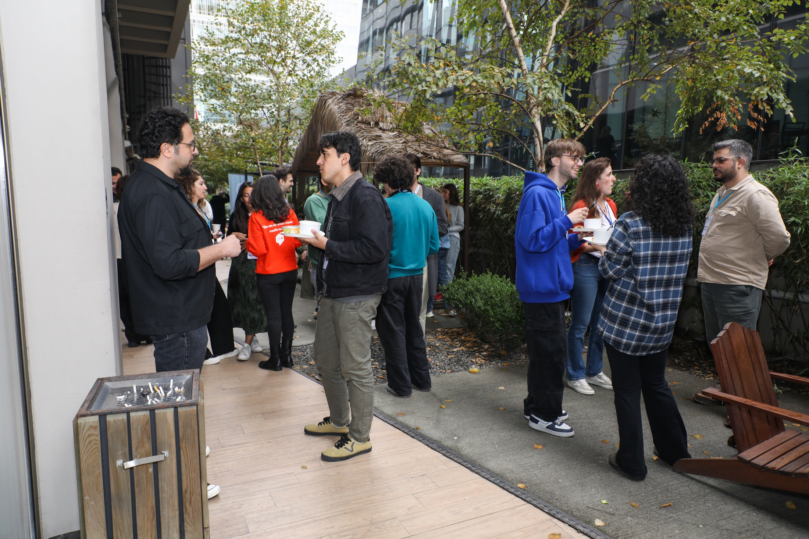

Thinking, learning, and building effective altruism together in TurkeyEA Turkey is a community for people who want to discuss which problems matter most, make decisions with better tools, and connect around higher-impact ways of helping. This page tells the same story as the real site, just with more visual fireworks and much less restraint. |
 |
What are we trying to do?The goal is bigger than running a few events. We want to help people think together about which problems are most pressing, use evidence to make better decisions, and move toward higher-impact paths for action. Today that shows up through city communities, introductory programs, career-oriented conversations, and online resources. The language here is old web; the community spirit underneath it is very current. |
Webmaster note"This page may contain a dangerous amount of ridge borders, but the underlying goal is simple: create a good place for people to learn, think, and connect." HOT! Decorative enthusiasm levels remain historically accurate. |
Evidence-based thinkingWe care about data, research, and careful reasoning when asking what actually helps. |
Cause impartialityRather than committing too early to one area, we try to follow the evidence toward where extra effort may matter most. |
CollaborationWe want people to learn from one another, work together well, and build relationships that last. |
Long-term thinkingWe try to remember that today's choices affect not only people now, but also people in the future. |